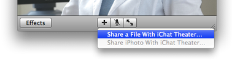
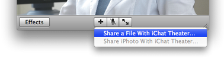
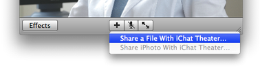

Sharing OsiriX content with iChat Theatre

Here is a quick step by step to show you how to share the content of your OsiriX viewer with your colleges through iChat.
- Open iChat and start a video chat with your college.
- From iChat, choose "Share a File With iChat Theatre". You can find this item in the "File" Menu or in the "+" Button Menu of your chat window.
- You will be asked to choose the file you want to share. Browse to OsiriX in you Application folder.
- Click the "Share" button. iChat will then display the content of OsiriX and you are ready to start a high-definition tele-radiology session.
Using iChat Theatre, OsiriX will let you share the following viewers: simple 2D, tilled 2D, fused PET-CT, orthogonal MPR, fused orthogonal MPR, 3D volume rendering, 3D MIP. Click on a view to share it.


 
